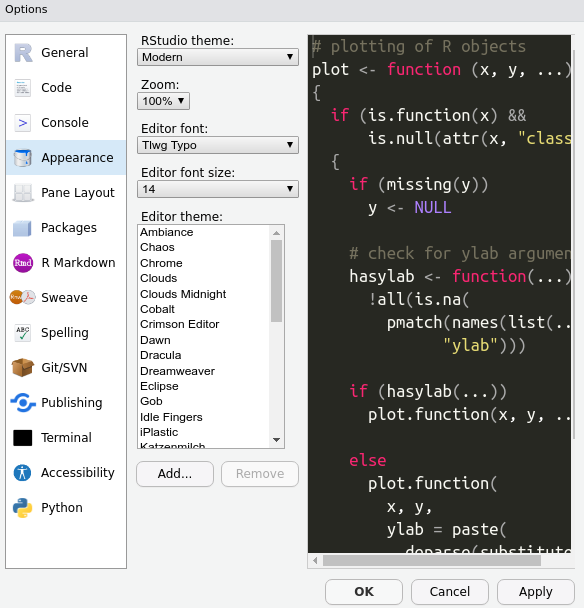

Module 6 Setting up RStudio
First, let’s get the right programs installed on your computer. Then we will explain what they are and why you need them.
First, download and install R:
Go to the following website, click the Download button, and follow the website’s instructions from there. https://mirrors.nics.utk.edu/cran/
Second, download and install RStudio:
Go to the following website and choose the free Desktop version: https://rstudio.com/products/rstudio/download/
Third, make sure RStudio opens successfully:
Open the RStudio app. A window should appear that looks like this:

Fourth, make sure R is running correctly in the background:
In RStudio, in the pane on the left (the “Console”), type 2+2 and hit Enter.
If R is working properly, the number “4” will be printed in the next line down.
Finally, some minor adjustments to make RStudio run smoother (and look cooler):
Go to Tools > Global Options and make sure your General settings match these exactly:
 Specifically, uncheck the option under Workspace to ‘Restore .RData into workspace at startup.’
Specifically, uncheck the option under Workspace to ‘Restore .RData into workspace at startup.’
Now go to the Appearance settings and choose a cool theme!

Boom!
Instructor tip:
These installations can be clunky with a large class, and it is never fun to start out with a bunch of technical hang-ups. We recommend assigning this work prior to the start of the first class. Hold office hours the hour before class in order to troubleshoot one-on-one with students if they need help.
Appendix, install supplementary software:
In order to install certain packages, you’ll need to take one more step:
- On Windows, download http://cran.r-project.org/bin/windows/Rtools/ and run the installer
- On Mac, you need Xcode Command Line Tools. You might already have this. Check by running
devtools::has_devel(). If You don’t have it, open shell/terminal and run
xcode-select --install- Alternatively, on Mac, you can download Xcode from the Mac App Store directly: https://apps.apple.com/ca/app/xcode/id497799835?mt=12